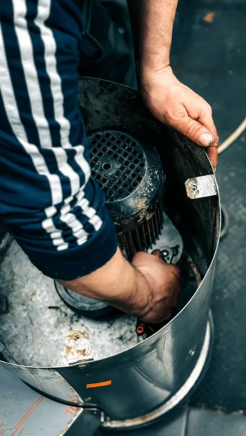
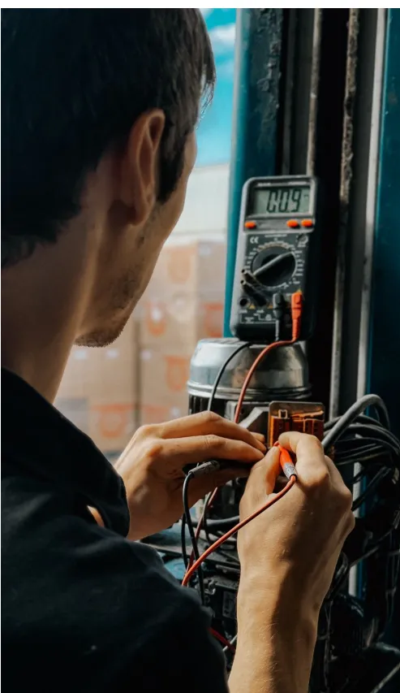
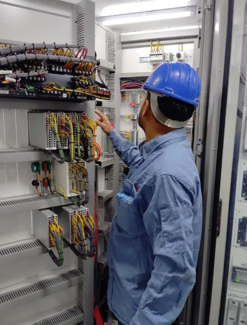

Motores5 señales de que tu motor necesita rebobinado
Ruidos, olor a quemado o disparos del térmico. Aprende a detectar a tiempo una falla antes de que el motor muera por completo.
Leer artículoBlog · Consejos
Guías claras y sin tecnicismos para cuidar tus motores, bombas, tableros y electrodomésticos. Escrito por quienes los reparan todos los días.

MotoresRuidos, olor a quemado o disparos del térmico. Aprende a detectar a tiempo una falla antes de que el motor muera por completo.
Leer artículo
ElectrodomésticosPequeños hábitos de mantenimiento que evitan reparaciones caras y hacen que tus electrodomésticos duren años más.
Leer artículo
SeguridadLlaves térmicas, diferencial y puesta a tierra. Lo mínimo que tu instalación necesita para proteger a tu familia o tu negocio.
Leer artículo